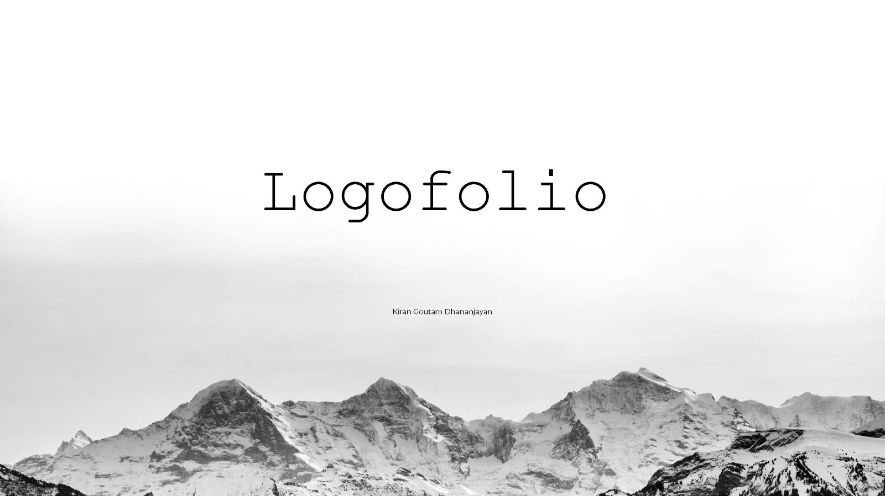
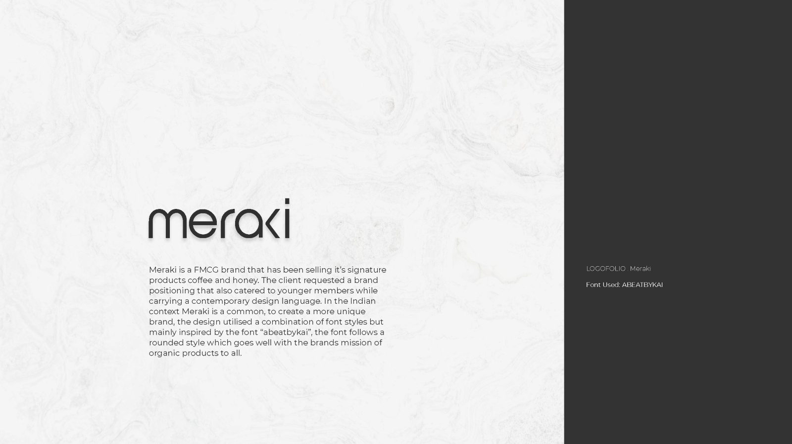
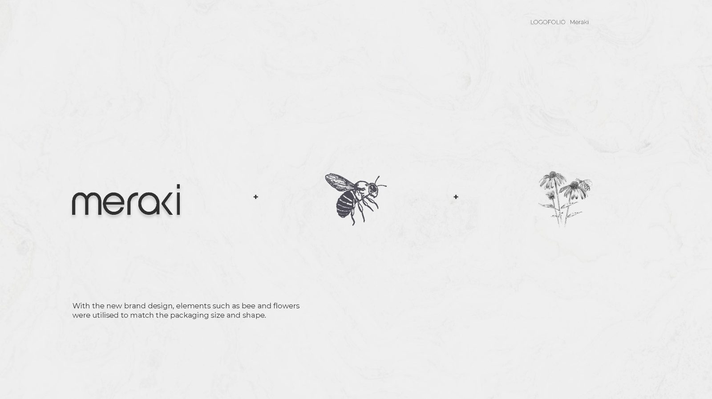
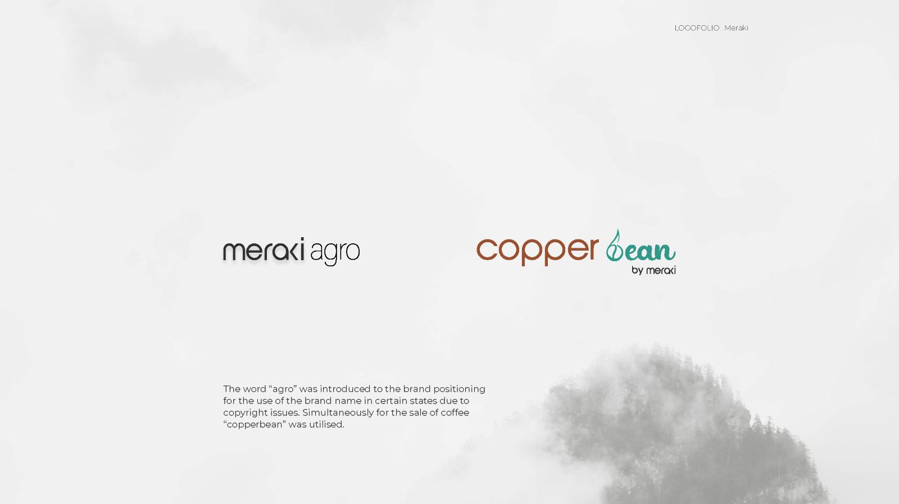
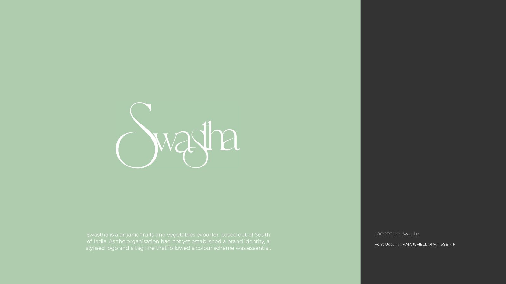
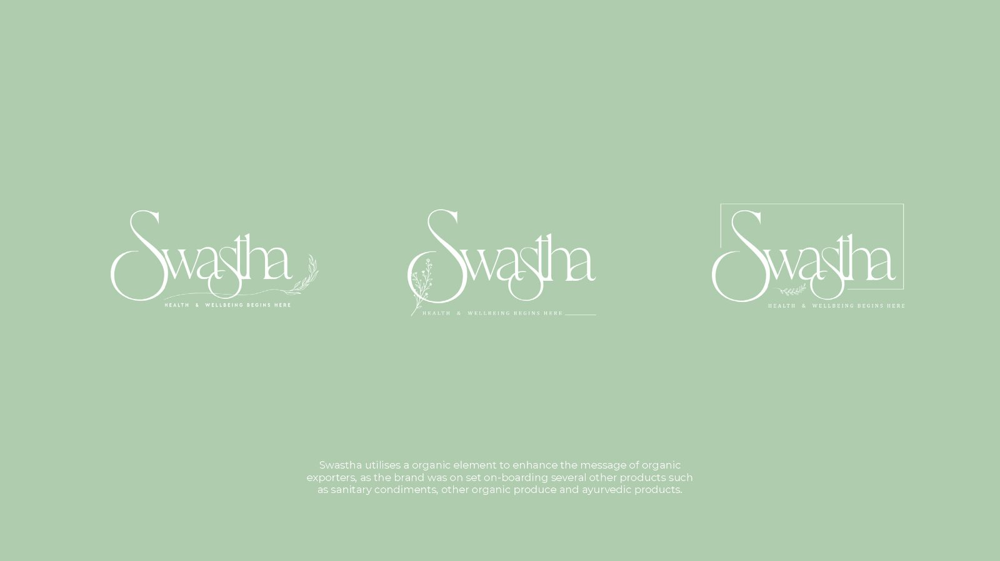
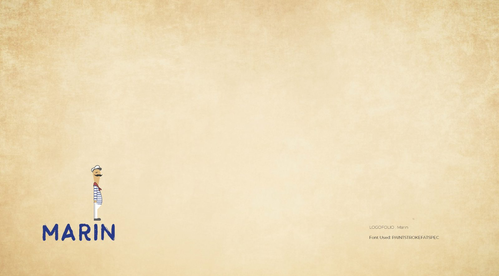
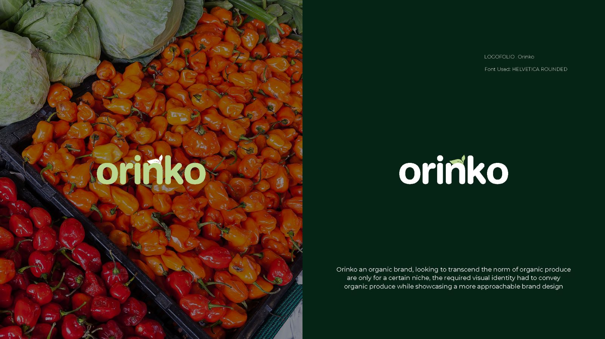

Logofolio
A series of logo designs for digital assets as well as product based assets — four food and lifestyle brands, each worked through from wordmark to application.
Four brands, four unrelated briefs.
This is a collection rather than a single engagement: wordmarks and applications for Meraki, Swastha, Marin and Orinko, across food, wellness, spirits and fresh produce.
Nine pages, each brand taken from wordmark through to application.
A logofolio invites the wrong reading.
Shown as a set, four marks tend to be read as style exercises — evidence of taste rather than of judgement. That reading is a problem for the work, because each of these four solved a genuinely different constraint.
Meraki needed a system elastic enough to carry sub-brands that did not exist yet. Swastha needed to read as calm rather than clinical, which is a narrow gap in wellness. Marin needed heritage without pastiche. Orinko needed to look like fresh produce rather than packaged food.
Keep them deliberately unalike.
The four share no palette, no typographic family and no construction logic. Meraki is light, wide and near-monoline; Marin leans on Indian maritime and ship illustration; Swastha is softly drawn across three weights and a sage palette; Orinko is built to look picked rather than manufactured.
A consistent house style across all four would photograph better as a set and would read as a stronger personal signature — which is a real argument, and I decided against it. Four brands that look like one designer’s taste are four brands that have been served second.
Elasticity that paid off later.
The Meraki system was built to absorb collaborations rather than to be finished. That held: after the final wordmark was designed the brand acquired two products, Copper Bean filter coffee and Wild Honey, and both were carried under it without redrawing anything. The full account is in the Meraki case study.
Nine pages, front to back.









What shaped the work as much as the brief did.
Four clients, four budgets, no shared research. Each mark had to stand on its own brief, with no pooled discovery to draw on.
Categories with opposite conventions. A premium brandy and an organic produce brand pull in opposite directions on almost every decision — weight, colour, illustration, how much white space reads as confidence rather than emptiness.
Application, not just the mark. Each one had to survive sub-brands, bottles or packaging, which is where wordmarks usually fail.
Four systems that still hold.
All four shipped as wordmarks with applications, and at least one — Meraki — has demonstrably absorbed products designed after it. That is the strongest evidence in the collection, because it is a test the mark passed without me.
No commercial data: these were identity engagements without measurement attached, and I am not going to construct any.
What I would do differently.
I would show the routes I rejected. As presented, each brand arrives at its answer without visible argument, which makes taste look like luck. The discarded Marin routes in particular would show why the maritime direction beat the obvious premium-spirits one.
I would also date each piece. Four marks over a span read differently from four in a month, and the collection currently hides its own chronology.